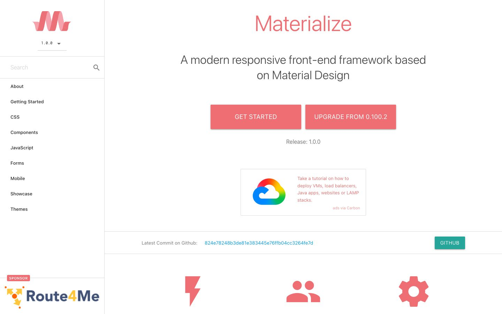

References / Website / 251
Materialize documentation website
The home page of Materialize, a CSS framework based on Material Design, built with its own components.
- Source
- materializecss.com
- Creator
- Materialize
- Style
- Material Design (agent-proposed, not yet reviewed by a person)
- Moods
- Bright, orderly
- Evidence
- Captured with
tools/capture.mjs(headless Chrome, 1440 × 900) on 28 September 2026 and inspected. The screenshot shows the first viewport; the measurement covers up to four screens. - Reviewed
- Rights
- Third-party work, stored with credit for commentary. License: unverified. Rights policy
Context
The Materialize repository on GitHub was created on 12 September 2014 and describes the project as “a CSS Framework based on Material Design”, under the MIT license. GitHub: Dogfalo/materialize.
Observed
- A white side navigation holds a coral logo, a version menu with an underline, a search field, and a plain list of sections.
- The title “Materialize” is set in a large light coral grotesque over the subtitle “A modern responsive front-end framework based on Material Design”.
- Two coral buttons, GET STARTED and UPGRADE FROM 0.100.2, have white all-capital labels, square corners, and a soft shadow below.
- A small teal GITHUB button with a shadow sits on a white band between thin gray rules. Below, three flat coral icons (a bolt, two people, a gear) stand in a row.
- A Carbon advertisement box and a Route4Me sponsor logo appear on the page.
Why it belongs
The page measures a shadow on 40 % of its boxes, with a median blur of 5 px and an offset of 3 px, which matches a 2 dp Material 1 raised button. Its chromatic share is only 0.04, because the coral is limited to buttons, icons, and type on a white page.
Borrow
Use one primary for buttons and icons and one contrasting secondary for a single small action, as the teal GITHUB button does.
Measured
Machine-extracted by tools/extract-traits.js on . Full measurement.
- Type families
- -apple-system (98%), Material Icons (2%), Inconsolata (0%)
- Type scale ratio
- 1.32
- Median radius
- 0 px
- Mean chroma
- 0.02
- Palette
- #ffffff 81%
- #000000 13%
- #ee6e73 2%
- #616161 2%
- #26a69a 1%
- #039be5 1%
- #777777 0%
- #ef9a9a 0%

